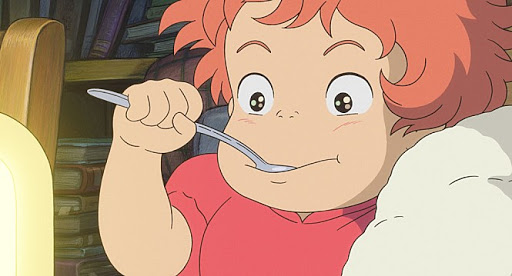

센과 치히로의 행방불명

줄거리
어느 화창한 날, 10살 소녀 치히로는 부모님과 함께 시골로 이사를 가게 된다.
그러던 중 길을 잘못 들어 어떤 터널 앞에 도착하게 되고, 터널을 지나자 묘한 느낌을 주는 폐허가 된 놀이 공원을 발견한다.
치히로는 기분 나쁜 느낌에 빨리 떠나자고 부모님을 재촉하지만 뭔가에 홀린 듯한 그들은 이곳저곳을 돌아다니다가 어느 음식점 앞에서 게걸스럽게 음식을 먹는다.
그 모습에 질려서 혼자 돌아가겠다고 나선 치히로는 수수께끼 같은 소년 하쿠와 만난다.
해가 지기 전에 돌아가라는 그의 말.
그러나 이미 해는 져가고 그곳에는 이상한 존재들이 나타나기 시작한다. 두려움에 부모님에게 돌아가봤지만 부모님은 이미 돼지로 변해있었다.
겁에 질린 치히로는 처음 온 곳으로 되돌아간다.
하지만 돌아가는 길은 이미 물이 차올라 잠겨 있었기 때문에 그곳을 빠져나가지 못한다.
거기다 물이 찬 곳의 건너편은 인간의 세상이 아닌 전혀 다른 세상이다.
결국 하쿠의 도움으로 치히로는 유바바의 온천장에서 일하게 되면서 온갖 일을 겪게 되는데...
대표적인 등장인물
센/치히로(千/千尋)
이 영화의 열 살인 여자 주인공. 성은 오기노(荻野)이다.
치히로가 이 곳에 오게 된 주요 인물. 머리는 회갈색 포니테일 스타일을 유지하고 있다.
복장은 온천에서 입는 옷과 크림과 연두색의 T셔츠에 빨간색의 반바지를 입은 두 가지 종류가 있다.
전형적인 도시 아이의 모습으로써 고집을 부리거나 부모님께 의지하려는 모습을 보인다.
하쿠(ハク)
본명은 '니기하야미 코하쿠누시(더빙판: 니기하야미 고하쿠누시)'이다.
치히로 덕분에 이름을 기억해낸다. 일본 신화의 니기하야미노미코토(饒速日命)에서 유래 되었다.
중반 이후에는 백룡의 모습으로도 등장한다.
어렸을 적 코하쿠 강에서 신발을 주우려다가 물살에 휩쓸린 치히로를 구한 생명의은인이자 코하쿠 강의 신.
벼랑 위의 포뇨

줄거리
따분한 바다 생활에 질린 나머지 몰래 집을 빠져나온 인면어 한 마리.
해파리에 숨어들어 수면 위로 향하던 중 유리병에 갇히고 어망에 끌렸다가 겨우 탈출하지만 기절하고 만다.
다행히도 마침 밖으로 놀러나온 소스케가 그것을 발견하고는 유리병을 돌로 깨부숴 구한다.
소스케는 요양시설에서 일하는 어머니와 같이 사는 다섯 살 소년.
소스케는 발견한 인면어에게 포뇨라는 이름을 지어주고 물을 채운 통에 넣어 보육원에 가져간다.
하지만 요양원의 할머니 중 한 분의 눈에는 영 좋지 않은 모양.
때문에 바닷가에 숨어서 포뇨와 놀던 중 포뇨의 아버지인 후지모토가 바다 생물을 조종해 포뇨를 데려간다.
바다로 돌아간 포뇨는 소스케의 피가 작용을 해 팔다리가 생기게 되지만 인간을 싫어하는 후지모토는 마법의 힘을 통해 포뇨를 진정시키고는 우물에 약을 넣는다.
하지만 포뇨는 정신을 차리자마자 다시 팔다리를 뻗고 탈출을 시작,
우물의 힘을 통해 완전한 인간이 되어 동생들과 함께 바다에 엄청난 소동을 일으키면서까지 소스케를 찾아가기 시작한다.
대표적인 등장인물
포뇨(ポニョ)

본 작품의 주인공인 물고기(인면어).
본명은 '브륀힐데'이며 후지모토와 그란 만마레의 딸이다. 후지모토 몰래 가출을 시도하나, 유리병 속에 몸이 끼어 움직이지 못하게 된 것을 소스케가 구출해 준다.
'포뇨'라는 이름은 소스케가 지어준 것이다. 사람과 매우 흡사한 얼굴을 하고 있어, 도키 할머니에게 '인면어'라 불린다.
병에서 구해주던 소스케의 손가락 상처에 난 피를 마시게 되어, 반인어가 되는 힘을 얻게 된다.
이름의 유래는, 작품의 작화 작업 중 미야자키 감독이 자신이 그린 캐릭터를 두고 느끼며 언급한 'ポニョっとしている'라는 표현이라고 한다.
소스케(宗介)

5살 남자 아이. 본작품의 주인공. 벼랑 위에 있는 2~3층 정도 되는 주택에서 엄마와 함께 살고 있다.
때묻지 않은 바른 심성의 소년. 모스 부호를 쓸 수 있을만큼 머리도 좋다.
어느 날 바다에서 포뇨를 만남으로써 이야기를 시작하는 주인공. 부모님은 물론이요 주변 어른들을 항상 이름으로 부르는 게 버릇.
가만히 보면 동네 사람들과 인사할 때 아는 사람들이면 이름부터 먼저 호명하고 인사한다.